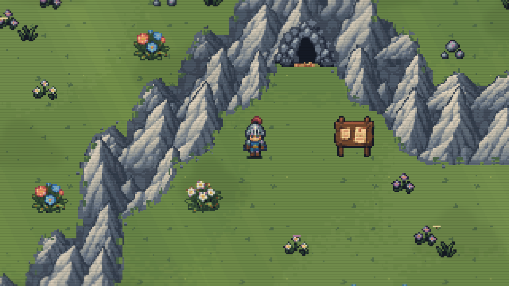

Mountain peaks — actual game rendering
Eight pixel-art peak variants replace the slab-like ridges. Warm lit spines, cool shaded slopes, varied heights and snow caps now follow the approved direction inside the existing map layout.
At gameplay scale
Captured directly from the local build with the normal presentation effects. These are game renders, not generated mockups.

Before & after
Drag to compare the previous slab rendering on the left with the new peaks on the right.
Approved direction and implementation
Approved generated concept Actual native-resolution map
Actual native-resolution map
The implementation uses the game's pixel grid and original blocked terrain. It adapts the concept to real paths, cave entrances, region joins and snow coverage; it does not replace the map with the generated picture.
Verified: 335 overworld checks and 39 snow checks passed. All 40,960 matching mountain overlap pixels join across regions and world wrap. Exactly 25 surface map captures changed; all 11 other surface captures remain byte-for-byte identical. Local build only.
Assets created with built-in imagegen and compiled to native pixels. Asset prompt · Refinement prompt · Verification record